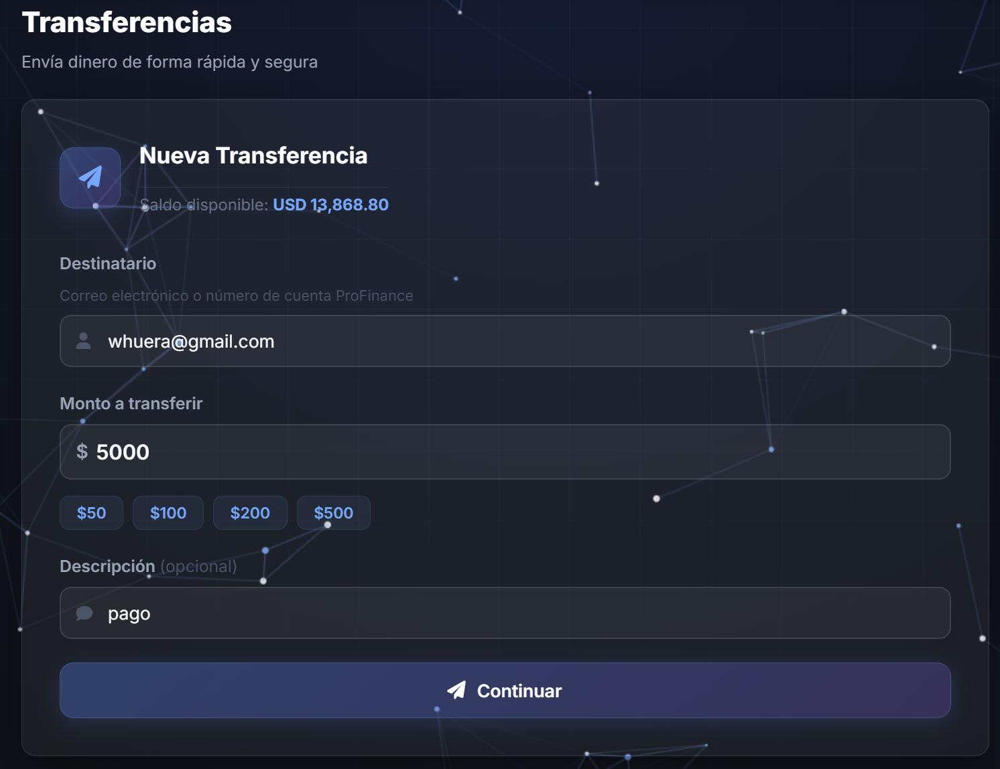
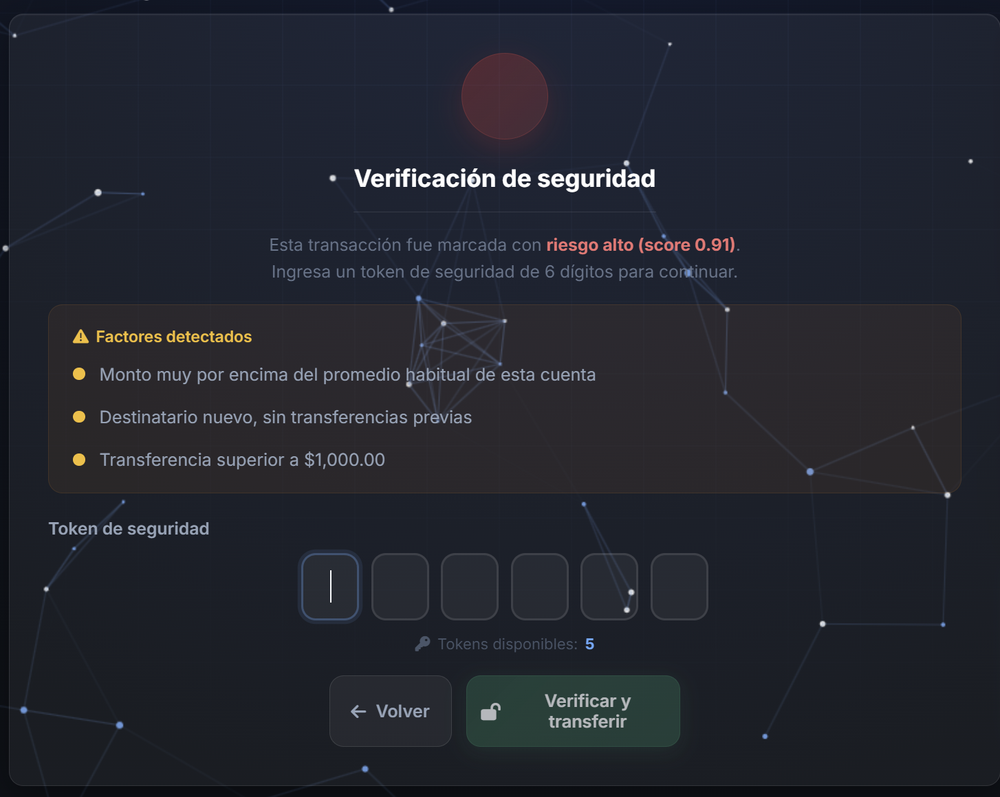
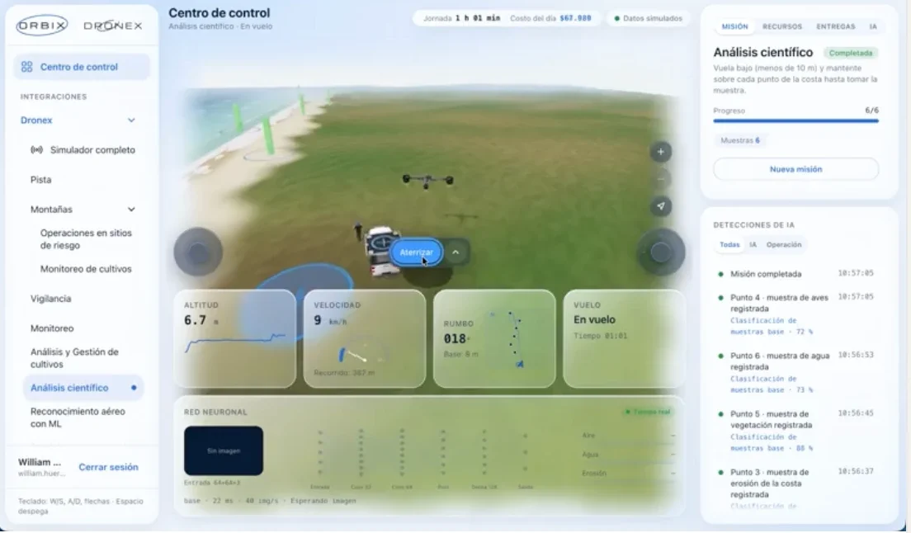
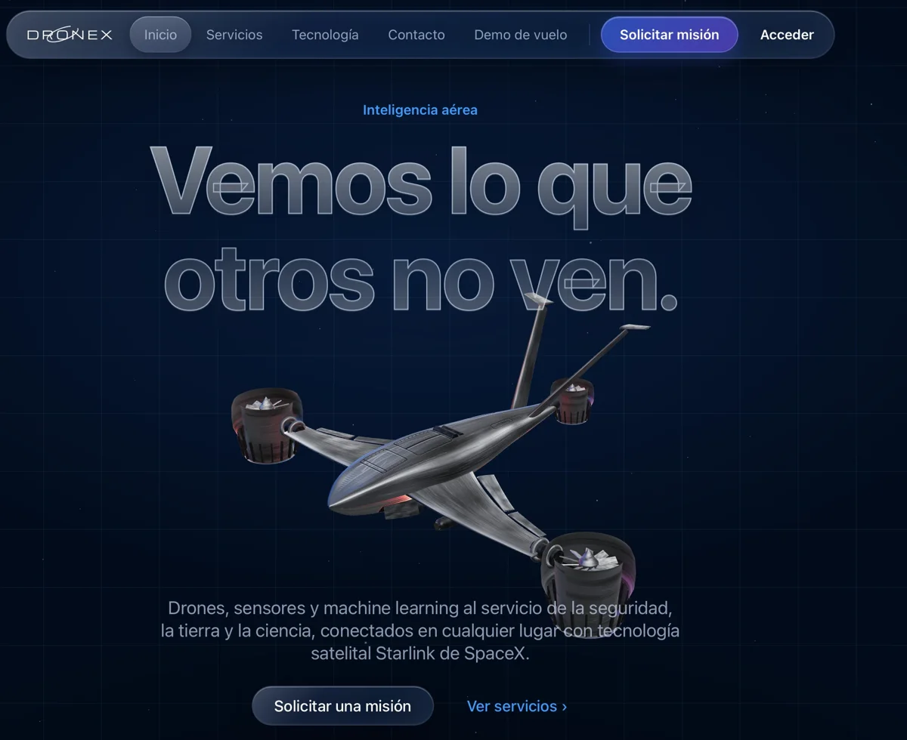

1
Captura Transaccional en Tiempo Real
Diseñé e implementé un módulo transaccional que captura los datos de cada transferencia (destinatario, monto, frecuencia, dispositivo) y los envía de forma asíncrona al pipeline de evaluación de riesgo. El feature engineering extrae variables comportamentales del cliente — como promedios históricos, patrones de horario y grafos de relación entre cuentas — que alimentan el modelo predictivo de detección de fraude en milisegundos, sin impactar la experiencia del usuario.

2
Scoring de Riesgo y Bloqueo Preventivo
Implementé un modelo de Machine Learning (gradient boosting + redes neuronales) que calcula un score de riesgo en tiempo real para cada transacción. Cuando el score supera el umbral configurado, el sistema bloquea preventivamente la operación y activa una verificación de múltiples factores (MFA) mediante tokens de seguridad. Los factores evaluados incluyen desviación del monto respecto al comportamiento habitual, ausencia de relación previa con el destinatario y superación de umbrales dinámicos — reduciendo el fraude transaccional de manera significativa sin generar fricción en operaciones legítimas.

Proyecto 2 · Drones + IA
Orbix — Centro de Control de Drones con Machine Learning
1
Centro de Control y Simulación de Vuelo
Plataforma de servicios con drones (integración Dronex) con un centro de control web: simulación 3D del vuelo, telemetría en tiempo real (altitud, velocidad, rumbo y estado de vuelo), joysticks virtuales y teclado, y gestión de misiones con progreso, recursos y entregas. Cubre casos de uso de vigilancia, monitoreo, análisis y gestión de cultivos, operaciones en sitios de riesgo, análisis científico y reconocimiento aéreo.

2
Red Neuronal y Detecciones de IA en Tiempo Real
Durante la misión, una red neuronal convolucional (entrada 64×64×3, capas convolucionales, pooling y densas) clasifica las muestras capturadas por el dron —aire, agua, vegetación, aves, erosión de costa— y publica cada detección con su nivel de confianza en un panel en vivo. Así el análisis aéreo pasa de la captura a la clasificación sin intervención manual.
Proyecto 3 · Inteligencia aérea
Dronex — Servicios con Drones, Sensores y Machine Learning
1
Plataforma de Servicios y Experiencia 3D
Sitio de producto para una flota de drones con modelo 3D interactivo y estética Liquid Glass. Presenta seis líneas de servicio —vigilancia con visión térmica 24/7, monitoreo de obras y cultivos con series temporales, análisis de suelos multiespectral (NDVI), análisis científico de campo, reconocimiento aéreo con ML y servicios aeroespaciales (fotogrametría, LiDAR)— con operaciones conectadas por enlace satelital Starlink, demo de vuelo y solicitud de misiones en línea.

2
Del Vuelo al Dato con Machine Learning
Flujo de punta a punta en cuatro etapas: planificar (área, sensores y permisos), volar (rutas autónomas y captura de alta resolución), procesar con ML (modelos de visión artificial que detectan, clasifican y cuentan objetos) y entregar informes, mapas y alertas listos para decidir. Se integra con el centro de control de Orbix para la operación de las misiones.